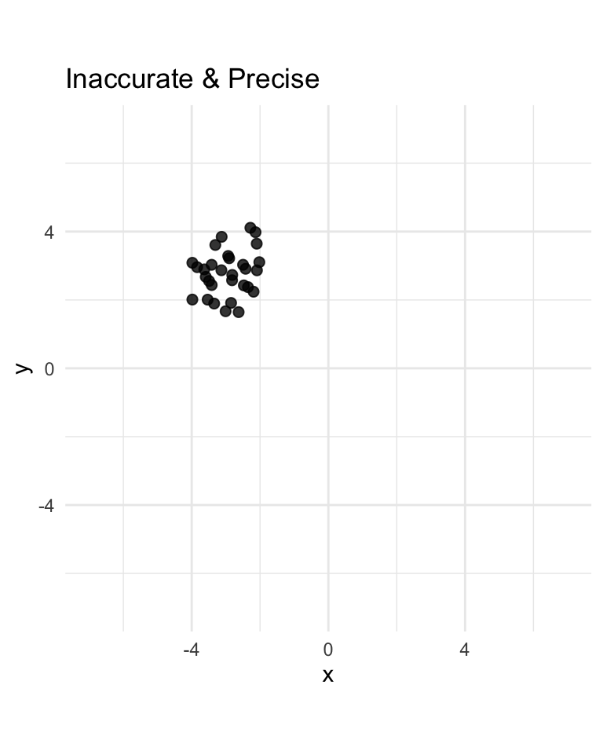

Show the code
library(MASS)
library(ggplot2)
library(dplyr)
library(tidyr)
mu_accurate <- c(0, 0)
mu_inaccurate <- c(-3, 3)
sigma_accurate <- matrix(data = c(.5, 0, 0, .5), nrow = 2, ncol = 2)
sigma_inaccurate <- matrix(data = c(5, 0, 0, 5), nrow = 2, ncol = 2)
sample_size <- 30
points1 <- mvrnorm(n = sample_size, mu = mu_accurate, Sigma = sigma_accurate)
points2 <- mvrnorm(n = sample_size, mu = mu_accurate, Sigma = sigma_inaccurate)
points3 <- mvrnorm(n = sample_size, mu = mu_inaccurate, Sigma = sigma_accurate)
points4 <- mvrnorm(n = sample_size, mu = mu_inaccurate, Sigma = sigma_inaccurate)
# Combine into a data frame
df <- rbind(
data.frame(x = points1[,1], y = points1[,2], group = "Accurate & Precise"),
data.frame(x = points2[,1], y = points2[,2], group = "Accurate & Imprecise"),
data.frame(x = points3[,1], y = points3[,2], group = "Inaccurate & Precise"),
data.frame(x = points4[,1], y = points4[,2], group = "Inaccurate & Imprecise")
)
mv <- 7
# Create one plot per group
p1 <- ggplot(filter(df, group == "Accurate & Precise"), aes(x = x, y = y)) +
geom_point(size = 2, alpha = 0.8) +
coord_fixed() +
scale_x_continuous(limits = c(-mv, mv)) +
scale_y_continuous(limits = c(-mv, mv)) +
theme_minimal() +
ggtitle("Accurate & Precise")
p2 <- ggplot(filter(df, group == "Accurate & Imprecise"), aes(x = x, y = y)) +
geom_point(size = 2, alpha = 0.8) +
coord_fixed() +
scale_x_continuous(limits = c(-mv, mv)) +
scale_y_continuous(limits = c(-mv, mv)) +
theme_minimal() +
ggtitle("Accurate & Imprecise")
p3 <- ggplot(filter(df, group == "Inaccurate & Precise"), aes(x = x, y = y)) +
geom_point(size = 2, alpha = 0.8) +
coord_fixed() +
scale_x_continuous(limits = c(-mv, mv)) +
scale_y_continuous(limits = c(-mv, mv)) +
theme_minimal() +
ggtitle("Inaccurate & Precise")
p4 <- ggplot(filter(df, group == "Inaccurate & Imprecise"), aes(x = x, y = y)) +
geom_point(size = 2, alpha = 0.8) +
coord_fixed() +
scale_x_continuous(limits = c(-mv, mv)) +
scale_y_continuous(limits = c(-mv, mv)) +
theme_minimal() +
ggtitle("Inaccurate & Imprecise")
p1
p2
p3
p4
